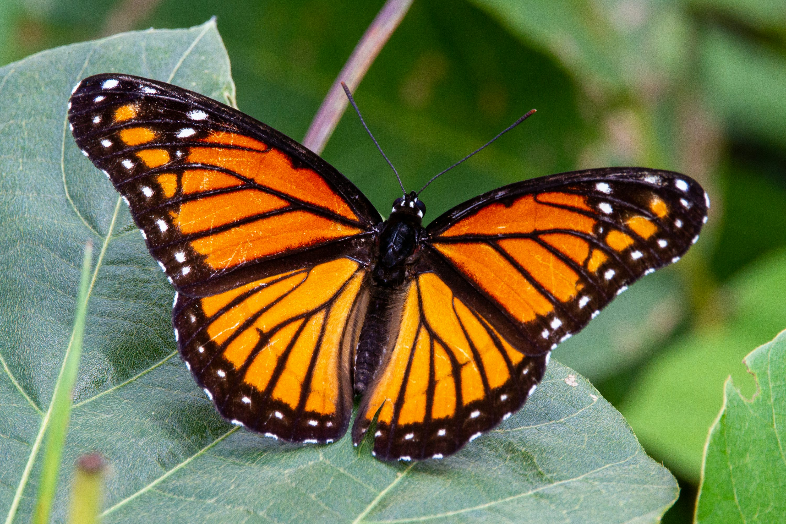
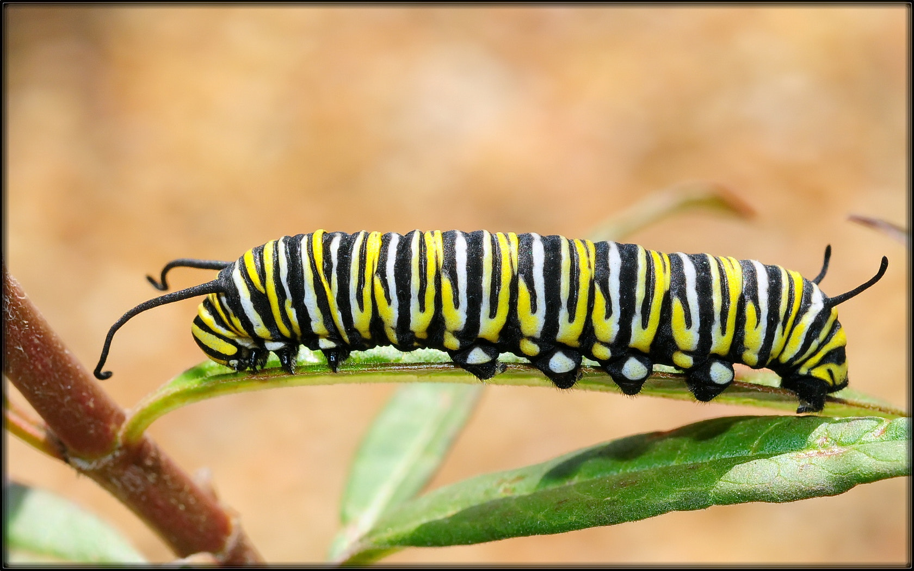
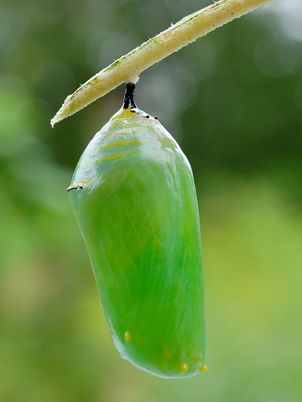

The Amazing transformation of Butterflies
The Amazing transformation of Butterflies
What is Metamorphosis?
Metamorphosis is a phenomenon in insects in which they completely transform their appearance with 4 different stages of their development.
We will go into into detail about these stages in more detail later. The stages of development in a Butterfly are Egg, Larva, Pupa, and Adult
Why are Butterflies important?
Butterflies are incredibly important to the ecosystem. They help Pollinate native plants which gives other animals their food such as birds, bats, and other insects.
The Four Stages of Development
- The Egg-Monarchs start out as Eggs hatched by an Adult Monarch which lays her Eggs under a Milkweed leaf which is a plant toxic to other animals and is there only source of food as a caterpillar. They are typically cream colored, conical in shape and roughly 1mm in size. Females typically lay around 3-500 Eggs in a 2-5 Week period. Monarch eggs typically hatch around 5-7 days after they are layed and then they become the next stage.
- Larva-In this stage its all about eating and growing. This is the stage where it is also called a Caterpillar 
- Pupa-This is the stage where the Caterpillar forms into a Chrysalis where they transform from a Caterpillar or Larva into a Butterfly 
- Adult Stage-After being in the Chrysalis they are now fully formed Butterflies with wings that formed in the Chrysalis. They can now freely fly and are at the maturity to lay eggs. Most Monarch Butterflies only live to be a few weeks old. Only the Super Generation which are born in the Late Summer/Early Fall get the chance to migrate to warmer places to survive.